类型系统
类型用方框表示，用来指示一个参数的含义。每一个积木产生的信息都有对应的类型。如果一个积木产生的值类型和一个输入的类型不匹配，那么就不能够正常连接起来。
内置的一些类型有：
整数型、实数型，二者不做特殊区分。表示这个参数是一个数字。比如游戏走过的总时间、当前的血量、炸弹数量等。字符串，表示一串文字。比如道具名字、道具描述、游戏种子名字、或者一条控制台指令的内容等。逻辑型，表示对错、真假等数据。比如是否拥有某个道具、当前房间是否在Boss房间、是否可以飞行等。复合数据，游戏的lua文档没有详细记录的东西。编辑器不知道该如何处理它。一般这种值在不同情况下有不同的处理方法。有些需要等待编辑器后续更新才能使用，也有一些可能会使得游戏崩溃。
此外，工具箱中涉及到游戏逻辑的每一个项目多数都对应一个类型，是按照操作对象进行划分的：
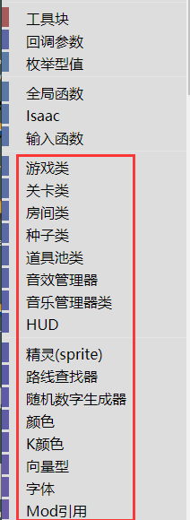
另外，还有一种类型为空值的类型需要留意。
枚举型值
枚举型值是一类特殊的值，一般表示从多个值之间进行一个选择。
比如有一个主动道具槽位类型的枚举型值，它可以表示角色主动道具的位置：
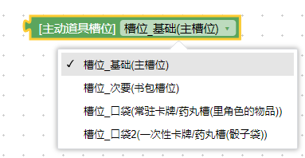
在清零主动道具充能的积木上，就用到了这个枚举型值作为输入，以指定清零哪里的道具：
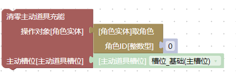
类型匹配
输入和输出类型需要匹配。
下图中，1表示逃离目标的操作对象需要是一个路线查找器类型，而2表示积木3得到的是一个路线查找器。1和2一致，所以才能够拼接起来：
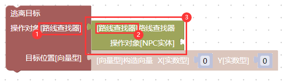
类型继承
先看一个例子。取角色的积木可以得到一个角色实体，对角色实体，可以增加黑心：
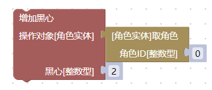
向下转型操作
炸弹实体、角色实体、效果实体、跟班实体、刀实体、激光实体、NPC实体、拾取物实体、子弹实体、眼泪实体都是实体类，所有对实体类的操作，都可以对这些类型进行。
实体类中，我们还可以让一个实体类死亡，这里的逻辑是，炸弹实体、角色实体、效果实体、跟班实体、刀实体、激光实体、NPC实体、拾取物实体、子弹实体、眼泪实体都可以死亡，因此可以按照以下方式拼接：
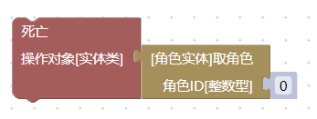
但是，反过来就不行了，如果我们用生成指令生成一个实体，它无论如何都不能进行增加黑心。因为实体类不是玩家实体，所以这里是拼不上去的：
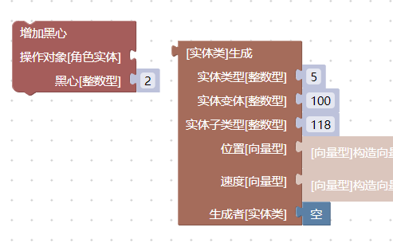
向上转型操作
有时候，我们想要生成一个底座道具，然后设置它的价格（生成块类似控制台指令spawn 5.100.118）：
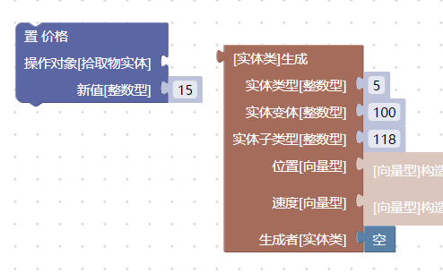
由于生成积木块能够生成游戏中的任意实体，它不知道自己生成的到底是一个可拾取物还是一个NPC实体(也就是敌人)，也有可能是炸弹实体等，所以它笼统地给出一个实体类。
但在这里，我们很确定生成的就是道具底座，所以使用一个到拾取物来连接两个积木（也就是向上转型）：
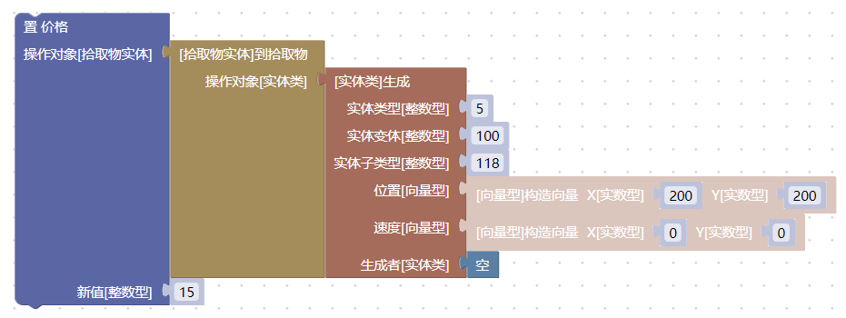
由于道具价格受到其它的自动更新机制影响，我们暂时没办法设置为15之外的值，这一点先不用关心。
实体类中为我们提供了各种类型的转换积木：
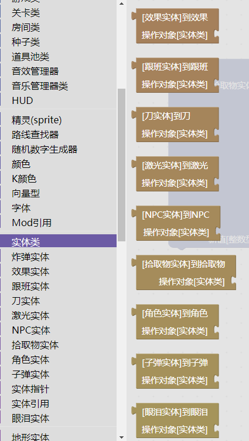
如果要使用这些积木，需要在逻辑上确保操作对象是正确的类型，否则会产生一个空值。
对空值进行操作可能会导致脚本执行错误。这一类错误并不会破坏游戏的mod系统，也没有什么严重的后果，但会让当前正在执行的mod程序逻辑中断。如果你的代码是在其它位置（而非控制台上，比如在角色受伤后）执行的，游戏可能会禁止掉你的mod，或者导致后续其它mod的逻辑无法执行等。
继承关系
以撒的mod系统继承关系非常简洁，共有两类继承关系：
炸弹实体、角色实体、效果实体、跟班实体、刀实体、激光实体、NPC实体、拾取物实体、子弹实体、眼泪实体都是实体类。
地形实体_门、地形实体_沟壑、地形实体_大便、地形实体_按钮、地形实体_石头、地形实体_尖刺、地形实体_爆桶都是地形实体。
空值
在逻辑中有一个积木可以产生空值：
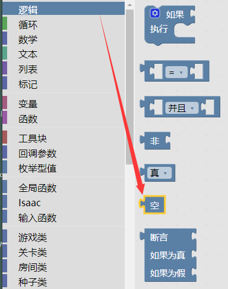
空值可以出现在几乎任何地方，对空值进行操作可能会出现问题，这需要视情况而定。
比如，在前面的生成操作中，生成者就可以是空值：
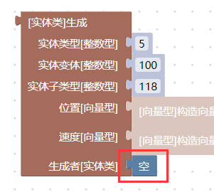
但是我们不可以给空值增加一颗黑心，这会导致语法错误：
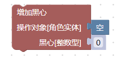
在其它情况下，空值可能会进入到具体的游戏内部逻辑，多数情况下游戏可能会正确处理，少数情况下也可能会导致崩溃。
什么时候使用空值需要根据具体积木的游戏内部实现逻辑来确定。